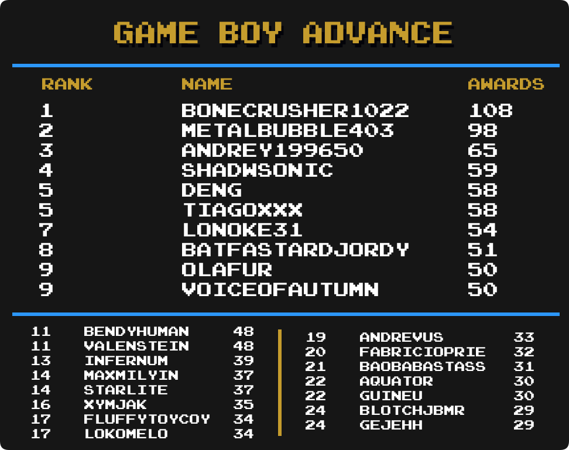

Top Masteries
 By
MrOwnership
By
MrOwnership
Contents
- Intro
- Current Champions
- Notable Milestones
-
Category Rankings
- Total Awards
- Total Awards (Excluding Hacks)
- Events
- Amstrad CPC
- Arcade
- Arduboy
- Atari 2600
- Dreamcast
- Game Boy
- Game Boy Advance
- Game Boy Color
- Game Gear
- Hack Champ
- Homebrew Champ
- Master System
- Mega Drive
- Nintendo 64
- NES
- Nintendo DS
- PC-8000/8800
- PC Engine
- PlayStation
- PlayStation Portable
- Pokémon Mini
- Sega Saturn
- Sega CD
- SNES
- Virtual Boy
- WASM-4
- Watara Supervision
Intro
We are going to take a look at another metric for greatness, Mastery Awards. Mastery awards are given to users when they complete every achievement for a given set in hardcore mode. Users wear mastery awards as a badge of honor on their profile page representing all the hard work they put into truly becoming a master of the game.
Below we will take a look at which users rank among the best with the most mastery awards in several categories well as notable updates from the previous month to each individual category. Check to see how you rank among the rest of the community members.
Special thanks to  Nydaxn for creating the ranking image templates.
Nydaxn for creating the ranking image templates.
* Data as of July 1st 2022.
Current Champions
|
|
|
Mastery Awards | |
|---|---|---|---|
| Total Awards |  guineu guineu |
750 | |
| 3DO Interactive Multiplayer |
guineu &  ChronoGear ChronoGear
|
5 | |
| Amstrad CPC |  roukanumachi roukanumachi |
14 | |
| Apple II | guineu |
12 | |
| Arcade |  Wendigo Wendigo |
56 | |
| Arduboy |  Released Released |
20 | |
| Atari 2600 |  PMniac PMniac |
96 | |
| Atari 7800 | PMniac |
10 | |
| Atari Jaguar | PMniac |
5 | |
| Atari Lynx | guineu |
5 | |
| ColecoVision | PMniac |
8 | |
| Dreamcast |  SteveHarvey SteveHarvey |
19 | |
| Events |  televandalist televandalist |
26 | |
| Game Boy |  Shootzy Shootzy |
123 | |
| Game Boy Advance |  bonecrusher1022 bonecrusher1022 |
108 | |
| Game Boy Color |  pitapocket17 pitapocket17 |
53 | |
| Game Gear | Nydaxn |
60 | |
| Hack Champ |  HolyShinx HolyShinx |
190 | |
| Homebrew Champ |  AuburnRDM AuburnRDM |
153 | |
| Intellivision |  Jungon Jungon |
13 | |
| Magnavox Odyssey 2 |
 alphacrust & Jungon alphacrust & Jungon
|
6 | |
| Master System | Jungon |
68 | |
| Mega Drive |  DUT DUT |
117 | |
| MSX | guineu |
8 | |
| Nintendo 64 |  BenTobitt BenTobitt |
45 | |
| Neo Geo Pocket |  MelodyAsh MelodyAsh |
7 | |
| NES |  SanMarino SanMarino |
238 | |
| Nintendo DS |  Olafur Olafur |
63 | |
| PC Engine |  Infernum Infernum |
35 | |
| PC-8000/8800 | guineu |
9 | |
| PC-FX |
 Annonith & Annonith &  YahwehTzVaoth YahwehTzVaoth
|
3 | |
| PlayStation |  Andrey199650 Andrey199650 |
76 | |
| PlayStation Portable |  minibt minibt |
32 | |
| Pokémon Mini |  Sylrifaide Sylrifaide |
32 | |
| Sega 32X |
DUT &  Fara0 Fara0
|
3 | |
| Sega Saturn |  Orph Orph |
15 | |
| Sega CD | Orph |
6 | |
| SG-1000 |
PMniac & Jungon
|
8 | |
| SNES |  danibodom danibodom |
187 | |
| Vectrex | Jungon |
6 | |
| Virtual Boy |
 Grahamtams & Jungon Grahamtams & Jungon
|
11 | |
| WASM-4 | AuburnRDM |
26 | |
| Watara Supervision |  Sarconius Sarconius |
42 | |
| WonderSwan |
Annonith & AuburnRDM
|
3 |
Notable Milestones
700 Mastery Awards
500 Mastery Awards
400 Mastery Awards
300 Mastery Awards
200 Mastery Awards
 Suffa28
Suffa28 xTyrea64
xTyrea64100 Mastery Awards
 MauricioReis
MauricioReis bennz13
bennz13 Botch
Botch Kinglink
Kinglink Lokomelo
Lokomelo NickDeleted
NickDeletedCategory Rankings
Total Awards
-
guineu remains in first with 750 total mastery awards.
-
Olafur has made it into the top 25 and is in 22nd place.
Total Awards (Excluding Hacks)
-
guineu extends the 1st place lead with 42 new mastery awards this month.
-
ChronoGear &
 MaddieKittyTV have made it into the top 25 are are tied in 23rd place.
MaddieKittyTV have made it into the top 25 are are tied in 23rd place.
Events

-
televandalist remains in 1st place.
-
 voiceofautumn has moved up 11 spots into 9th place.
voiceofautumn has moved up 11 spots into 9th place. -
 Blazekickn &
Blazekickn &  DoctorV have made it into the top 25 and in an 11-way tie for 19th place.
DoctorV have made it into the top 25 and in an 11-way tie for 19th place.
Amstrad CPC
-
roukanumachi remain in 1st with 14 total mastery awards.
-
Jungon has made it into the top 25 and is tied for 5th place.
-
 14ausher has made it into the top 25 and is in a 37-way tie for 17th place.
14ausher has made it into the top 25 and is in a 37-way tie for 17th place.
Arcade
-
Wendigo increases their lead with 5 new mastery awards this month.
-
guineu moves up 11 places into a tie for 11th place.
Arduboy
-
Released takes the top spot with 8 new mastery awards this month.
-
 AmandaAlex,
AmandaAlex,  cochese788,
cochese788,  NickGoat1990,
NickGoat1990,  Beulu79 &
Beulu79 &  Daphtaru have all made it into the top 25.
Daphtaru have all made it into the top 25.
Atari 2600

-
PMniac remains in 1st with 96 total mastery awards.
-
alphacrust moves into 4th place with 12 new mastery awards this month.
-
 VectorPrime40, Andrey199650 &
VectorPrime40, Andrey199650 &  Haruda have all made it into the top 25.
Haruda have all made it into the top 25.
Dreamcast

-
SteveHarvey remains in 1st with 19 total mastery awards.
-
Andrey199650 has jumped up 9 spots into a tie for 5th place.
-
 Smoka,
Smoka,  misterkeebler,
misterkeebler,  TheNegativeIon,
TheNegativeIon,  Bendyhuman,
Bendyhuman,  Biendeo &
Biendeo &  BloodParade have all made it into the top 25.
BloodParade have all made it into the top 25.
Game Boy
-
Shootzy remains on top with 123 mastery awards.
-
guineu has reached 100 total mastery awards.
-
AuburnRDM moves into a 8th place with 7 new mastery awards this month.
Game Boy Advance

-
bonecrusher1022 remains on top with 108 total mastery awards.
-
guineu has made it into the top 25 and is tied for 22nd place.
Game Boy Color

-
pitapocket17 remains in 1st place with 1 new mastery awards this month
-
YahwehTzVaoth has made it into the top 25 and is tied for 23rd place.
Game Gear

-
Nydaxn remains in 1st place with 1 new mastery awards this month.
-
Sarconius jumps up 10 spots with 5 new mastery awards this month.
-
 Zio has made it into the top 25 and is in a 3-way tie for 22nd place.
Zio has made it into the top 25 and is in a 3-way tie for 22nd place.
Hack Champ

-
HolyShinx still has a commanding lead with 190 mastery awards.
-
 dericobanjo jumps up 3 spots into 4th place with 10 new mastery awards.
dericobanjo jumps up 3 spots into 4th place with 10 new mastery awards.
Homebrew Champ

-
AuburnRDM remains on top with 153 total mastery awards.
-
Beulu79 & NickGoat1990 both jump up 5 spots into a 3-way tie for 13th place.
-
Jungon has made it into the top 25 and is in a tie for 16th place.
Master System
-
Jungon remains in 1st place with 68 total mastery awards.
-
AuburnRDM jumps up 3 spots into a 4-way tie for 12th place.
Mega Drive

-
DUT remains in 1st place with 119 total mastery awards.
-
Jungon moves into 3rd place with 6 new mastery awards this month.
-
 earfly has made it into the top 25 and is in a tie for 25th place.
earfly has made it into the top 25 and is in a tie for 25th place.
Nintendo 64

-
BenTobitt remains in 1st place with 45 mastery awards.
-
Olafur jumps up 8 spots into a 4-way tie for 14th place.
NES
-
SanMarino remains in 1st place with 238 total master awards.
-
 Mosk59 jumps up 6 spots into 15th place with 14 new mastery awards this month.
Mosk59 jumps up 6 spots into 15th place with 14 new mastery awards this month. -
 sireture has made it into the top 25 and is in a tie for 24th place.
sireture has made it into the top 25 and is in a tie for 24th place.
Nintendo DS

-
Olafur remains in 1st place with 64 total master awards.
-
 Cheshire &
Cheshire &  ockerjj have made it into the top 25 and are in a 5-way tie for 20th place.
ockerjj have made it into the top 25 and are in a 5-way tie for 20th place.
PC-8000/8800

-
guineu,
 malasdair & AuburnRDM hold the top spots. Check in next month to see if there is any change to this.
malasdair & AuburnRDM hold the top spots. Check in next month to see if there is any change to this.
PC Engine

-
Infernum remains in the top spot with 35 mastery awards.
-
 Nanashi moves into 7th place with 3 new mastery awards this month.
Nanashi moves into 7th place with 3 new mastery awards this month. -
 NEOMAR &
NEOMAR &  ZBR have made it into the top 25 and are in a 6-way tie for 19th place.
ZBR have made it into the top 25 and are in a 6-way tie for 19th place.
PlayStation

-
Andrey199650 remain in 1st with 76 total master awards.
-
 FBiDev jumps up 12 spots into 3rd place with 20 new mastery awards this month.
FBiDev jumps up 12 spots into 3rd place with 20 new mastery awards this month.
PlayStation Portable
-
minibt remain in 1st with 32 total mastery awards.
-
 WanderingHeiho moves into 3rd place with 1 new mastery award this month.
WanderingHeiho moves into 3rd place with 1 new mastery award this month. -
 Henxorr has made it into the top 25 and is in a 6-way tie for 11th place.
Henxorr has made it into the top 25 and is in a 6-way tie for 11th place. -
 Aeliana has made it into the top 25 and is in a 4-way tie for 21st place.
Aeliana has made it into the top 25 and is in a 4-way tie for 21st place. -
 AntonioFNN has made it into the top 25 and is in a 7-way tie for 25th place.
AntonioFNN has made it into the top 25 and is in a 7-way tie for 25th place.
Pokémon Mini
-
Sylrifaide remians in the top spot having mastered all 32 sets.
-
Infernum moves inot a tie for 5th place with 3 new mastery awards this month.
-
 MuckPie,
MuckPie,  YouGotHitByGunner &
YouGotHitByGunner &  Jacobgharibian have all made it into the top 25.
Jacobgharibian have all made it into the top 25.
Sega Saturn
-
Orph remains in 1st with 15 total mastery awards.
-
Sarconius jumps up 5 spots into 4th place with 3 new mastery awards this month.
-
 nezzen has made it into the top 25 and is in a 4-way tie for 11th place.
nezzen has made it into the top 25 and is in a 4-way tie for 11th place.
Sega CD
-
Orph, Infernum & Bendyhuman hold the top spots. Check in next month to see if there is any change to this.
SNES

-
danibodom remains in 1st with 187 total mastery awards.
-
guineu has made it into the top 25 and is in 23rd place.
Virtual Boy

-
Grahamtams, Jungon & guineu hold the top spots. Check in next month to see if there is any change to this.
WASM-4
-
AuburnRDM remains in 1st with 26 total mastery awards.
-
MaddieKittyTV moves into 3rd place with 2 new mastery awards this month.
 Maximdraco, NEOMAR, YouGotHitByGunner,
Maximdraco, NEOMAR, YouGotHitByGunner,  Dominick &
Dominick &  GregHouse007 have all made it into the top 25.
GregHouse007 have all made it into the top 25.
Watara Supervision